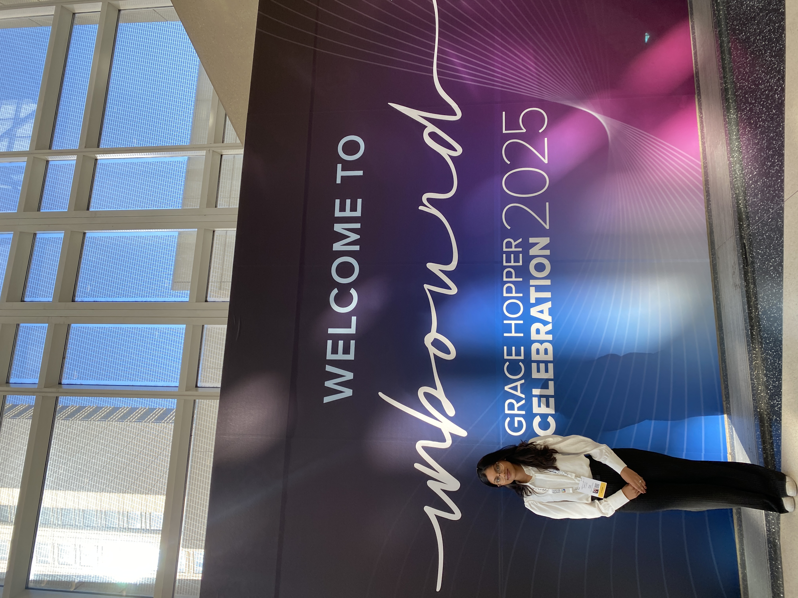
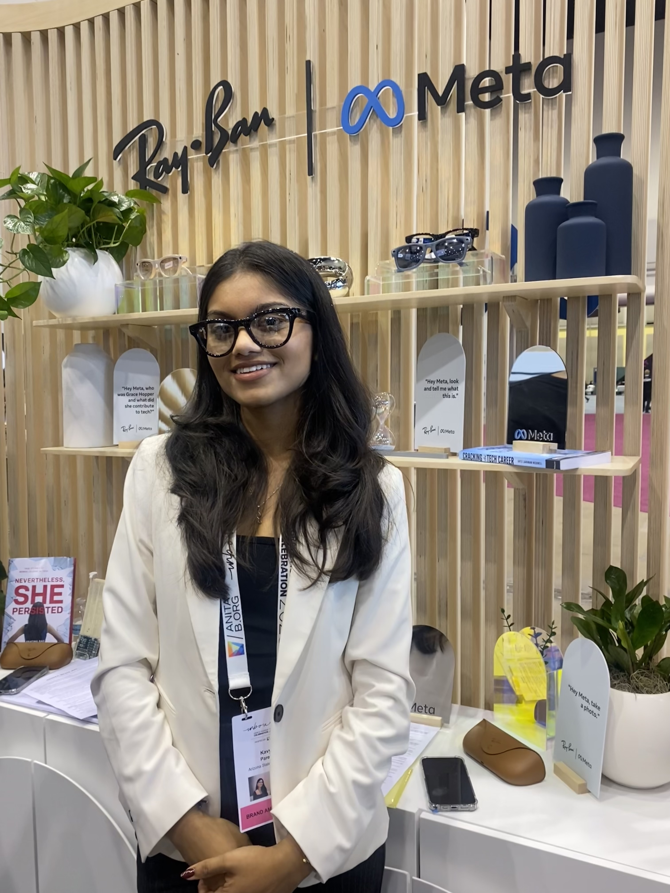
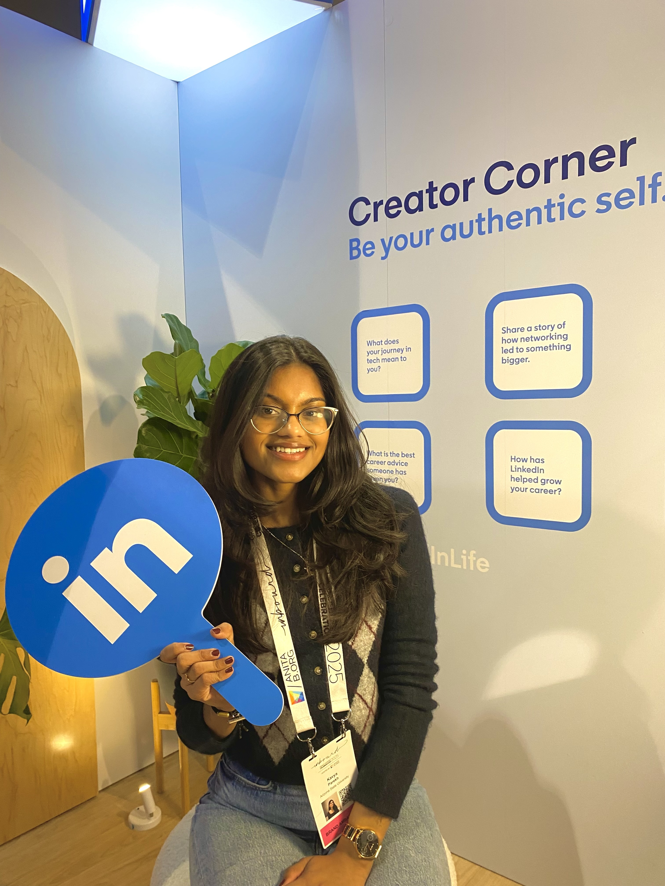
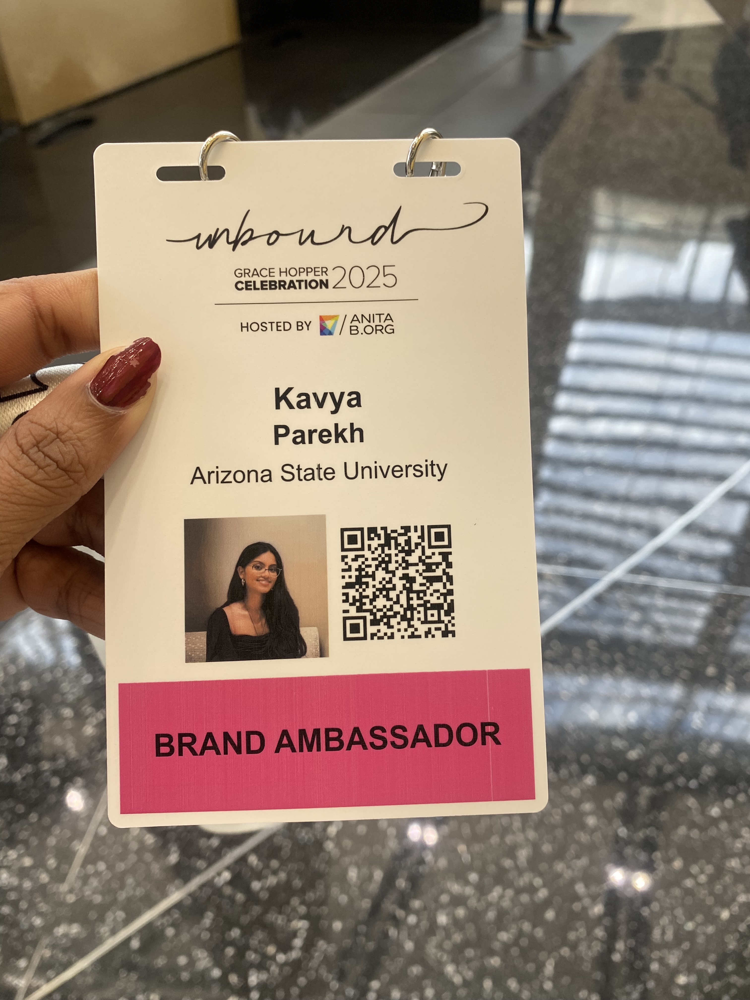
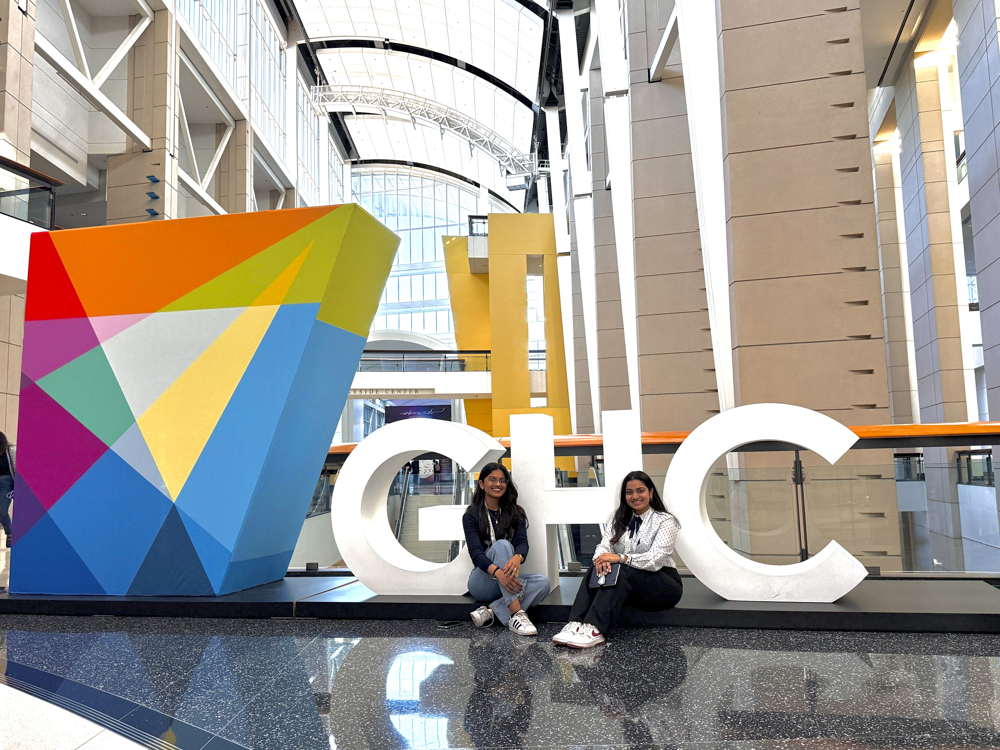

Community
Beyond the Code
Grace Hopper Celebration 2025
Scholar · Brand Ambassador
Selected as a Brand Ambassador at GHC25 — hosted Braindate sessions, facilitated conversations across diverse voices, and connected with engineers and recruiters from Deloitte, MathWorks, Morgan Stanley, Goldman Sachs, Two Sigma, and more at the world's largest gathering of women in computing.
"When women in tech come together, we learn, lead, and create something unstoppable."






Society of Women Engineers (SWE)
Active Member · ASU Chapter
Led professional development and technical interview workshops for 50+ participants. Coordinated a diversity & inclusion panel featuring women industry leaders.
AnitaB.org
Member
Member of AnitaB.org — the nonprofit behind the Grace Hopper Celebration — committed to connecting, inspiring, and guiding women in computing toward greater impact in the tech industry.